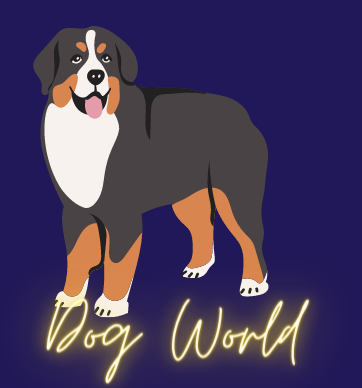
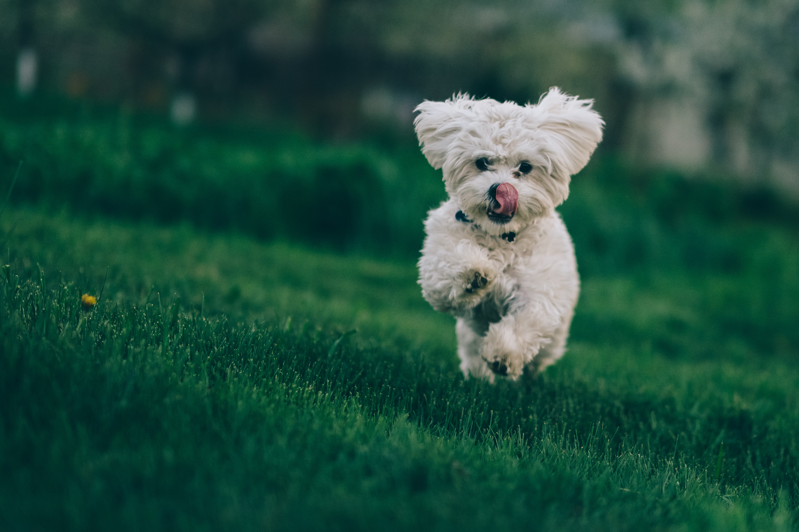
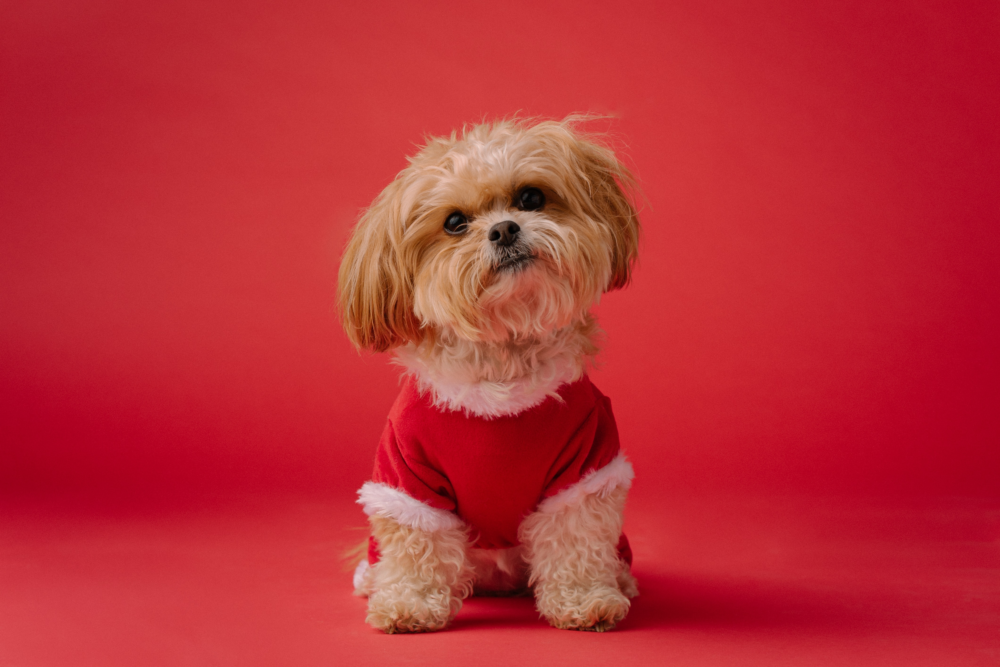

Dog World
About
Health
Breed
Training
1 / 3

2 / 3

3 / 3
❮
❯
Dogs are not our whole life, but they make our lives whole." "Happiness is a warm puppy." "Money can buy you a fine dog, but only love can make him wag his tail." "The better I get to know men, the more I find myself loving dogs." "The greatest fear dogs know is the fear that you will not come back when you go out the door without them." "A dog is the only thing on earth that loves you more than he loves himself." "Once you have had a wonderful dog, a life without one is a life diminished." "The world would be a nicer place if everyone had the ability to love as unconditionally as a dog." "No matter how little money and how few possessions you own, having a dog makes you rich." "Every dog has his day, unless he loses his tail, then he has a weak-end."